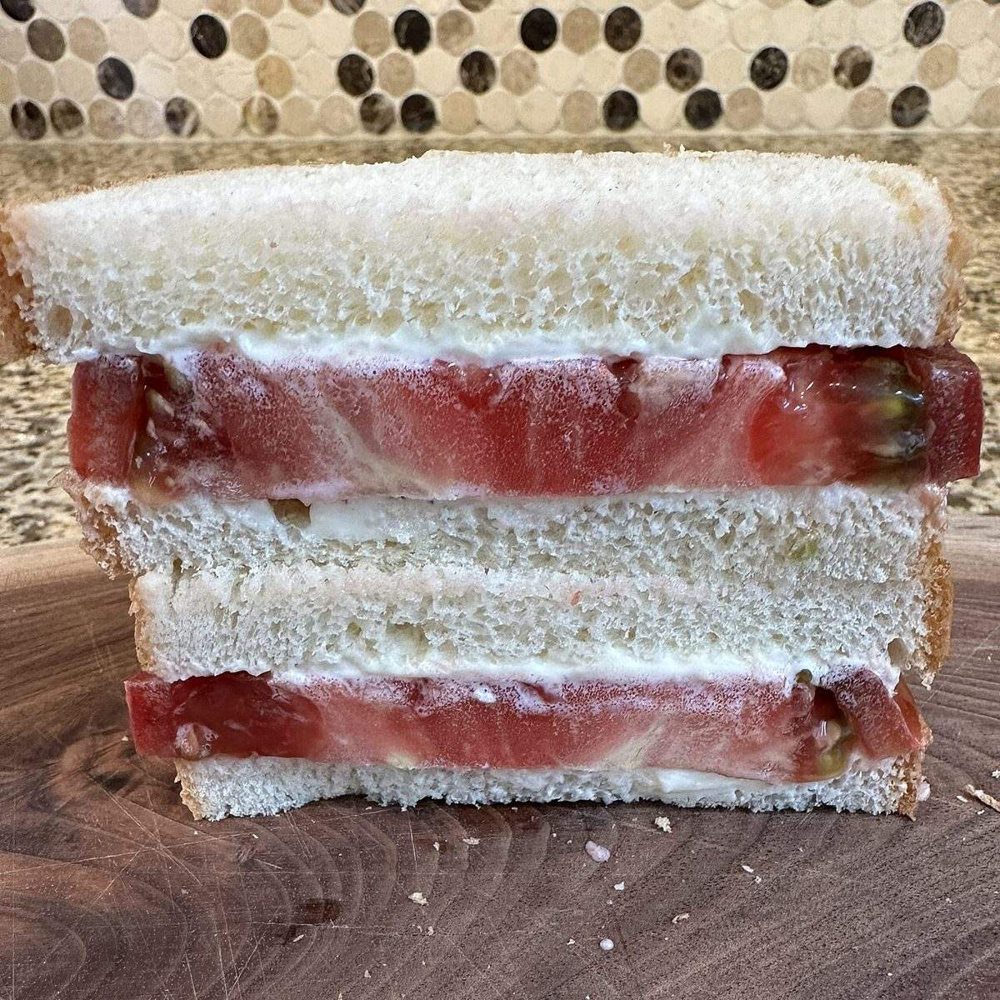

ACCESS
アクセス


所在地
お店の場所
| 所在地 | 〒069-0813 北海道江別市野幌町36-12 |
|---|---|
| 電話 | 準備中 |
| 営業時間 | 準備中 |
| 定休日 | 準備中 |
| 駐車場 | 準備中 |
| SNS | Instagram @kissafaro |
地図は住所をもとに表示しています。営業時間などは、Instagramもあわせてご確認ください。



イメージ
写真はフリー素材


写真はイメージです。お店のものではありません。
ACCESS
所在地
| 所在地 | 〒069-0813 北海道江別市野幌町36-12 |
|---|---|
| 電話 | 準備中 |
| 営業時間 | 準備中 |
| 定休日 | 準備中 |
| 駐車場 | 準備中 |
| SNS | Instagram @kissafaro |
地図は住所をもとに表示しています。営業時間などは、Instagramもあわせてご確認ください。

イメージ
写真はイメージです。お店のものではありません。